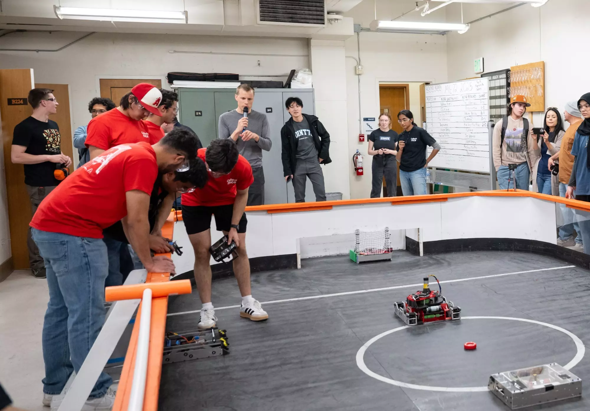

Project Overview
As part of the Curriculum for ME 72: Design Laboratory, we were tasked to design, build, and test
three robots for the RoboHockey Games. Led the development of the designated attacker robot.
Developed a MATLAB script to simulate drivetrain performance ensuring acceleration, maneuverability,
and traction requirements. Engineered a turret-style shooter and roller intake system for reliable puck handling
and rapid-fire capability. Implemented an odometry-based localization algorithm to enable
automated targeting and shooting.
Competition Photos


Attacker Robot
